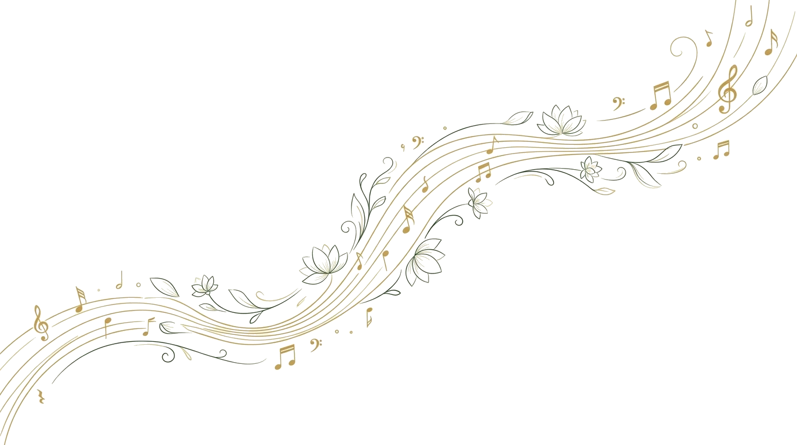

卐
Ishadam Music Academy • Classes & Training
Sopana Sangeetham
Step into the sacred temple music tradition of Kerala — cultivating devotion, breath control, rhythmic precision, and inner stillness through voice and Idakka.
Ishadam Music Academy • Classes & Training
Step into the sacred temple music tradition of Kerala — cultivating devotion, breath control, rhythmic precision, and inner stillness through voice and Idakka.

Sung beside the sanctum steps (Sopanam) of Kerala’s ancient temples, Sopana Sangeetham is more than a musical form — it is a meditative offering of sound, breath, and devotion.
Our guided sessions welcome beginners and practitioners alike, blending authentic ragas, traditional talas, and mindful vocal resonance in small, attentive batches.
Online & Offline
Flexible Batches
Small Groups
Personal Attention
All Ages
Beginner Friendly
Structured levels designed for steady, soulful progression
Voice alignment, basic raga phrases, Chempada & Adanta talas, and introductory temple invocations.
Deepening bhava (devotional expression), classic Jayadeva Ashtapadis, and rhythmic transitions.
Vocal rendition accompanied by Idakka percussive patterns, solo presentation, and meditative practice.
Reserve your spot for weekday or weekend sessions (online or in-person at Trivandrum). Connect with us on WhatsApp to confirm batch timings and registration.
Weekday Batch
Tue & Thu • Evening
Online & In-Person
Weekend Batch
Sat & Sun • Morning
Online & In-Person